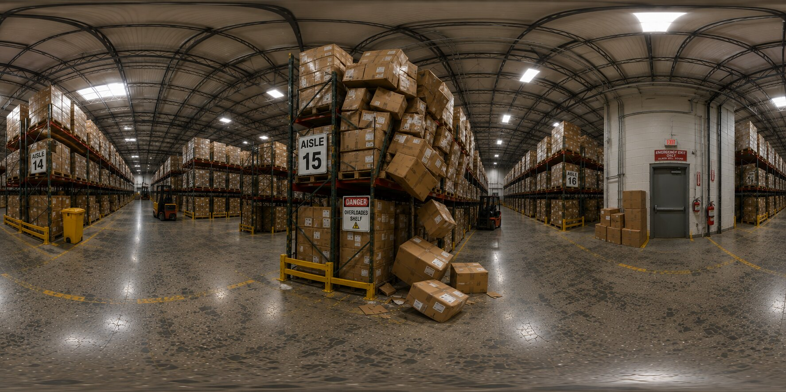
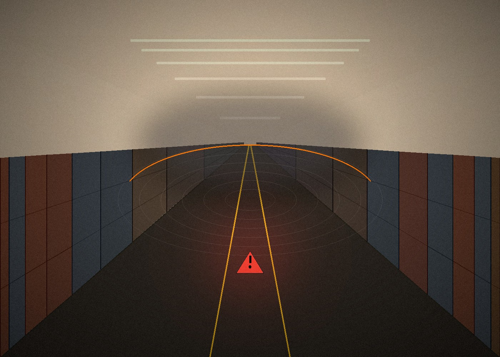
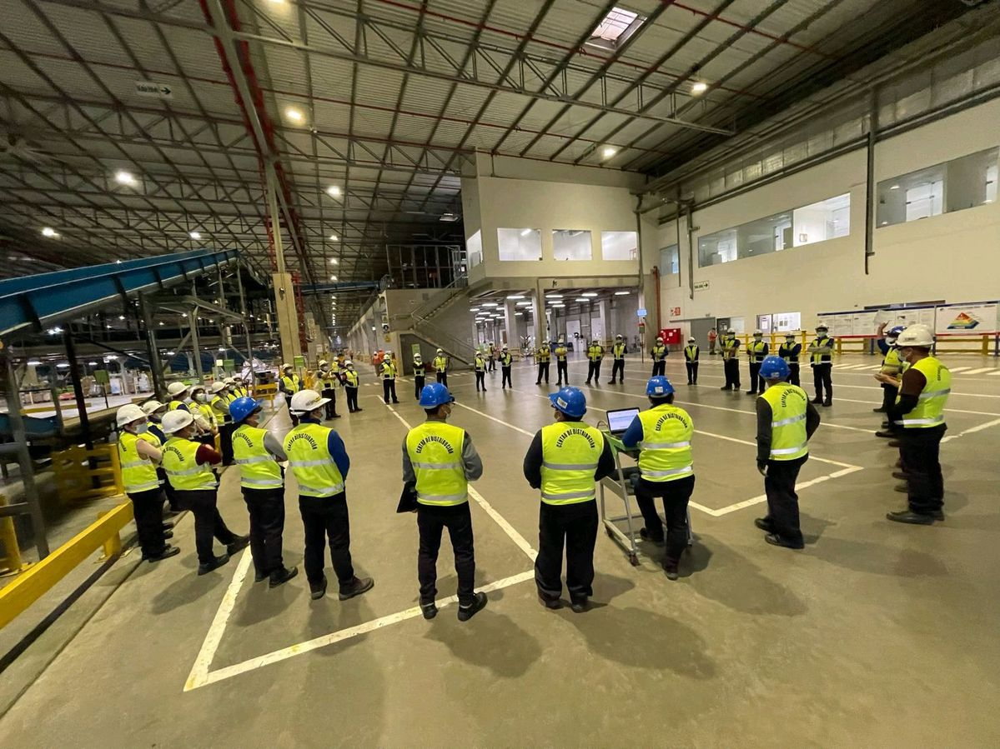

The Builders
We build practical technology for teams who work around real hazards — software that helps warehouse staff recognise risk and make the right call before an incident happens, not after.

Who We Are
Every product we build starts on the warehouse floor, not in a design document. That shapes three things we care about most.
Tools designed to fit into a real shift, not add another screen to check.
People retain more from making a decision than from reading a policy.
The goal isn't a completed course — it's a worker who spots the hazard.
Our Product
An interactive 360° warehouse safety training experience. Trainees move through a realistic warehouse scene, identify hazards as they appear, and get immediate feedback on the decisions they make — instead of watching a video and hoping it sticks.


Explore the HAZARD ZERO experience and how it fits into a real shift.